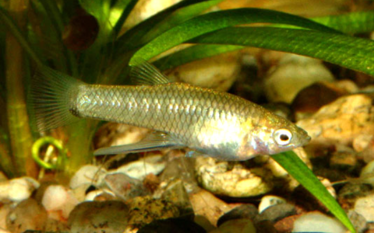

Systématique
- Ordre : Cyprinodontiformes
- Famille : Poeciliidae
- Genre : Girardinus
- Espèce : G. denticulatus

Girardinus denticulatus est une espèce de petit poisson vivipare endémique de Cuba, décrite par Garman en 1895. Son nom d'espèce fait référence à la structure particulière de sa dentition, un détail invisible sans microscope.
Les mâles mesurent environ 3 à 4 cm, tandis que les femelles sont plus grandes, atteignant 5 à 6 cm. C'est un poisson à la robe généralement argentée ou grise, assez sobre, avec parfois de légers reflets jaunâtres.
Il ressemble beaucoup à Girardinus metallicus, mais s'en distingue souvent par l'absence de marques noires prononcées ou de reflets métalliques intenses, bien que l'identification visuelle exacte puisse être délicate pour les non-spécialistes.
C'est un poisson grégaire et paisible, adapté aux aquariums communautaires calmes d'eau dure. Il est actif et curieux, explorant constamment son environnement à la recherche de nourriture.
Comme les autres membres de son genre, il apprécie une végétation dense pour se cacher, mais aussi des espaces de nage libre. Il peut être maintenu avec d'autres Poeciliidés pacifiques, bien qu'il faille éviter l'hybridation avec d'autres espèces de Girardinus.
Mode : vivipare.
La reproduction est typique des Poeciliidae : fécondation interne via le gonopode du mâle. La femelle incube les œufs et donne naissance à des alevins nageant librement.
La gestation dure environ 4 semaines. Les alevins sont autonomes dès la naissance. Bien que les parents ne soient pas les prédateurs les plus féroces, isoler les femelles gestantes ou fournir beaucoup de mousse de Java augmente le taux de survie des jeunes.
Dimorphisme sexuel : Très marqué. Le mâle est plus petit, plus fin et possède un gonopode (nageoire anale modifiée) très long, caractéristique du genre. La femelle est plus grande, plus ronde et présente une nageoire anale normale.
Espérance de vie : 2 à 3 ans.
Il est endémique de Cuba. On le trouve principalement dans la partie centrale de l'île (provinces de Villa Clara et Sancti Spíritus). Il habite les étangs, les lacs et les portions calmes des rivières. Il vit typiquement dans des eaux chaudes, calcaires (dures) et souvent eutrophes (riches en algues).
Répartition

Origine naturelle :
- Amérique Centrale (Caraïbes).
- Cuba (Endémique).
- Centre de l'île.
Paramètres de maintenance
Température : 23 à 28 °C.
pH : 7,0 à 8,0 (eau neutre à basique).
GH : 10 à 25 °dGH (eau dure recommandée).
Volume conseillé : Minimum 60 L pour un petit groupe, afin de laisser de l'espace de nage aux femelles adultes.
Régime alimentaire
Régime : omnivore / détritivore.
Il possède un tube digestif long adapté à la consommation d'algues et de biofilm.
En aquarium, il est essentiel de lui fournir une alimentation contenant de la matière végétale (spiruline, courgette, épinard) en plus des proies classiques (artémias, daphnies) pour le maintenir en bonne santé.